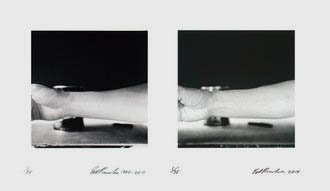

$-$ Buy Limited Editions . . .
Esteemed West Coast pop artist Ed Ruscha playfully upends the genre of self-portraiture in a twofold fashion. Ruscha not only foregoes the category’s traditional composition—a straight-on depiction of the face or body—but his diptych of two images, which depict nothing more than the artist's forearm and are separated by more than 50 years, offers little evidence of aging or change.

Self-Portrait of My Forearm 1960 and Self-Portrait of My Forearm 2014, 1960-2014
Diptych. Gelatin silver print on Ilford Multigrade paper, mounted in window mat. Signed and numbered edition of 35
$6500
Order now here: